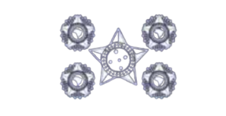
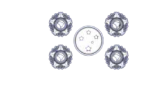

Estrutura visual da PRF São Paulo com os principais grupamentos, coordenações e divisões vinculadas à Superintendência.

DIRETOR

SUPERINTENDENTE
Coordenação-Geral de Gestão Operacional
Coordenação encarregada do planejamento e da supervisão das unidades de emprego operacional, patrulhamento e resposta tática da regional.
Ronda PRF
Unidade responsável pelo patrulhamento ostensivo de rotina, presença operacional nas rodovias e resposta inicial às principais ocorrências atendidas pela regional.
Grupamento de Patrulhamento Motorizado
Núcleo voltado ao patrulhamento ágil em motocicletas, apoio em deslocamentos rápidos e atuação em corredores viários com maior fluidez operacional.
Grupamento de Patrulhamento Tático
Núcleo empregado em abordagens de maior complexidade, reforço operacional e missões que exigem presença tática especializada.
Comando de Operações Especiais
Divisão responsável por coordenar ações especiais, concentrando capacidades operacionais diferenciadas e apoio a ocorrências críticas.
Núcleo de Operações Especiais
Núcleo dedicado ao emprego tático especializado, pronto para atuar em operações sensíveis, apoio a equipes e intervenções de maior risco.
Divisão de Operações Aéreas
Núcleo voltado ao suporte aéreo das operações, ampliando a capacidade de monitoramento, deslocamento e resposta em grandes áreas.
Coordenação-Geral de Integração e Gestão de Inteligência
Coordenação voltada à integração de informações estratégicas, gestão de pessoas e produção de conhecimento para apoio à tomada de decisão.
Divisão de Gestão de Pessoas
Divisão responsável pela administração funcional, movimentação de efetivo, acompanhamento de pessoal e rotinas de gestão de recursos humanos.
Divisão de Inteligência e Análise Policial
Divisão dedicada à coleta, análise e difusão de informações de interesse policial para orientar ações estratégicas e operacionais.
Corregedoria Geral
Divisão responsável pelo controle disciplinar, apuração interna e preservação dos padrões de integridade institucional.
Coordenação-Geral de Comunicação Institucional
Coordenação responsável pelo relacionamento institucional, comunicação pública, identidade visual e divulgação das ações da regional.
Divisão de Comunicação Social
Divisão voltada ao contato com o público, produção de conteúdo institucional e fortalecimento da presença oficial da regional.
Divisão de Publicidade e Mídias
Divisão encarregada da produção audiovisual, campanhas, peças de divulgação e gestão dos canais de mídia institucional.
Divisão de Gestão Comunicacional
Divisão que organiza fluxos de comunicação interna e externa, padronizando mensagens, posicionamentos e integração entre áreas.
Coordenação-Geral de Ensino e Capacitação
Coordenação responsável pelo desenvolvimento técnico, formação continuada e estrutura de ensino aplicada à qualificação do efetivo.
Universidade Corporativa da Polícia Rodoviária Federal
Divisão voltada à coordenação do ensino corporativo, estruturação de cursos e difusão do conhecimento técnico e doutrinário.
Núcleo de Apoio à Gestão
Núcleo de suporte administrativo e organizacional, voltado à sustentação das atividades acadêmicas e de gestão da UniPRF.
Núcleo de Ensino Especializado
Núcleo destinado ao planejamento e à execução de conteúdos avançados, treinamentos específicos e capacitações temáticas.